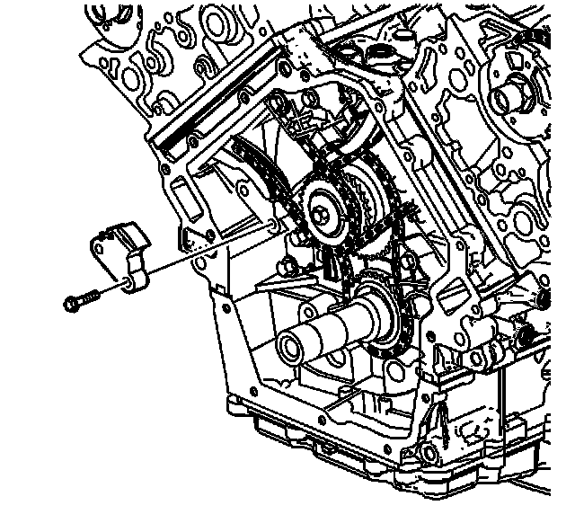
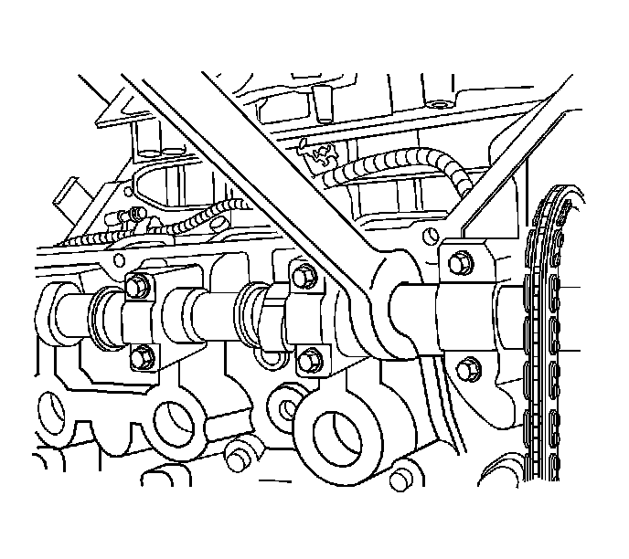
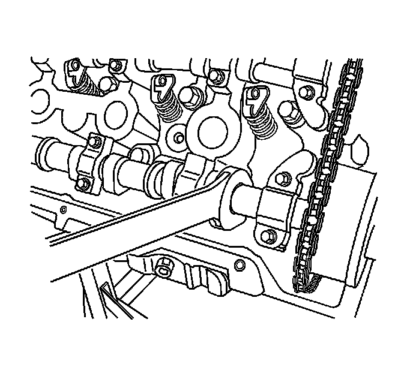
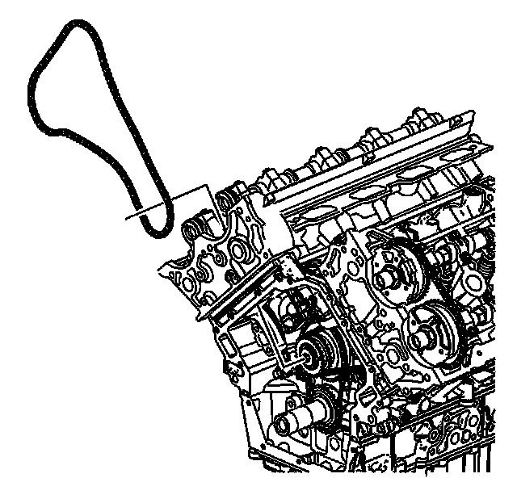
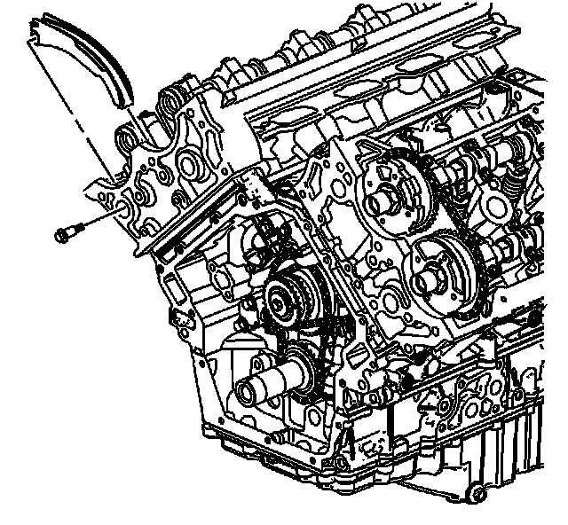
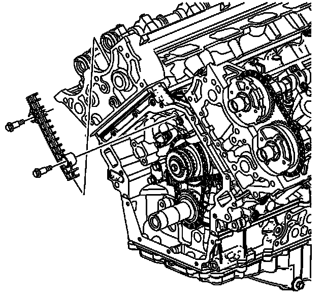

26. Secondary Camshaft Drive Chain Removal - Right Side
Secondary Camshaft Drive Chain Removal - Right Side

1. Remove the right secondary camshaft drive chain tensioner.

Notice: Refer to Torque Reaction Against Timing Drive Chain Notice (Torque Reaction Against Timing Drive Chain Notice) .
2. Use an open end wrench on the hex cast into the right intake camshaft, in order to prevent the camshaft from rotating, when loosening the camshaft position actuator oil control valve on the right intake camshaft.

3. Use an open end wrench on the hex cast into the right exhaust camshaft, in order to prevent the camshaft from rotating, when loosening the camshaft position actuator oil control valve on the right exhaust camshaft.

4. Remove the right camshaft position actuator oil control valves from the right side camshafts.
5. Slide the right camshaft position actuators off the right side camshafts.

6. Remove the right secondary camshaft drive chain from the outer camshaft intermediate drive shaft sprocket teeth.
7. Remove the right secondary camshaft drive chain from the engine.

8. Remove the right secondary camshaft drive chain shoe bolt.
9. Remove the right secondary camshaft drive chain shoe.

10. Remove the right secondary camshaft drive chain guide bolt.
11. Remove the right secondary camshaft drive chain guide.